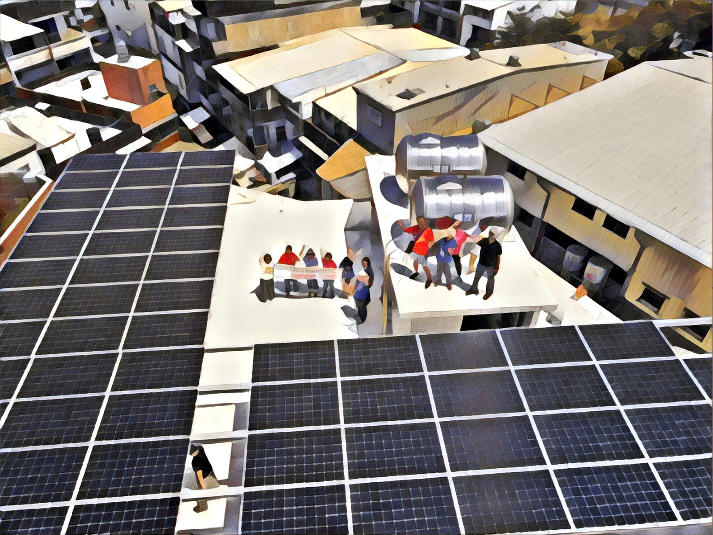

「原本覺得能源離我們很遠，加入庶民發電合作社後，顛覆了以前對能源的認識。」庶民發電合作社幹事陳怡晴女士說。
「能源」對大眾而言，乍聽之下很抽象，似乎是個專業的議題，難以在聽到的第一時間有概念。事實上，若將能源連結至「發電」，在概念上能讓大眾更容易理解。從數據來看，台灣能源原料進口率達將近98%，包含石油、天然氣、煤等，自產能源只有不到 2%。
能源過度仰賴進口映照出台灣能源自主率過低的問題，試想一下，當國際局勢不穩定時，原料進口勢必會遭受衝擊，倘若進口成本隨之提高，連帶台灣的發電成本也會上升，並反映在電費上。
從發電的角度來看，台灣目前主要仰賴火力及核能，但兩種發電方法皆會對環境產生內耗，舉凡空氣污染、海洋生態破壞、核廢料污染、以及核電廠潛在風險等。
台灣政府近年為解決能源問題，積極推動能源轉型，於2009年時立院三讀通過《再生能源發展條例》，確立能源多元發展的方向；2019年，立院通過《再生能源發展條例》修正案，訂立2025年再生能源發電占比目標為20%，自此政府為加速達標，目前正力推太陽光電及風力發電。
然而，由於目前再生能源電占比只有6％左右，而風力發電所需成本動輒上億元，以大眾資源來說，太陽光電相較之下為較平易近人的發電模式。
經過能源之旅的啟發，集結在一起的大家，有了創立庶民發電學習社區合作社的想法。「合作社延續了參與式預算的民主價值，體現一人一票、票票等值概念。」陳怡晴回憶合作社監事主席曾說：「花幾千塊的社費，換得20年的友情很划算。」 對社員而言，與其投資與其投資金錢在玩樂花費上，不如投資在合作社內，邊學習能源知識，也能認識志同道合的好夥伴。黃彩玉補充說到：「『庶民』的由來是因為我們合作社的社員都是市井小民，起心動念是為了認識能源知識，庶民的概念比『公民』更普羅大眾一些。」
對於合作社的創立有了共識後，在實際運作上，合作社強調的是「行動」，而非僅僅參與而已。讓更多人認識能源，從生活中節電，而非教科書式的政令宣導，成為合作社的核心目標。社員們除了致力在向社區推廣能源知識外，也開始規劃由自身資源發展能源的應用項目。陳怡晴解釋：「從我們的能力和資源綜合評估後，『屋頂型太陽能』是最合適的項目。」
由於台灣四季中，最缺電的季節是夏天，發展太陽能只要有陽光及能發電，且考量成本，一片太陽能板花費萬元相比其他發電方式較親民。此外，太陽能也較不受限於區域、氣候；選擇屋頂型則是因都是土地寸土寸金，只有屋頂為閒置空間，較易於靈活運用。
然而，並非所有屋頂皆符合太陽能板搭建資格，評估準則包含建築年齡、是否為違建、屋凸狀況（環境遮蔽程度）、坪數規模等，且礙於房屋老舊所衍生安全性疑慮，政府不見得會批准所有案件。再者，若是集合式住宅管委會有意願設置太陽能板，該項決議必須得到所有住戶的同意，即便全數同意，後續發電的用電分配也是一大問題。
此外，雖然2017年行政院通過經濟部「綠能屋頂全民參與」行動方案，在有條件下開放部分違建設置太陽能板，但地方政府法規尚未跟進，造成不同城市間不同調的局面。因此，合作社目前聚焦在推廣新北市屋齡15年以下的工廠或透天厝，設置太陽能板。
至於發電後的電力運用，有三種形式，包含大部分規模較大的案場將電力全數輸送給台電的「全額售電」；提供自身住家用電使用，若有餘電則賣給台電的「餘電售電」；以及完全「自發自用」的公民電廠。
鄭婉伶
目前庶民發電學習社區合作社協助完成搭建的太陽能案場共有兩座，分別在新北林口一處透天厝和宜蘭一間民宿。鄭婉伶分享接洽的趣事，由於林口案場主人本身為合作社社員，對於屋頂型太陽能板早有一定認識；但宜蘭的案子為合作社參與新北市政府擺攤活動時，隔壁攤位的參與者，在了解合作社理念後，對太陽能板十分有興趣，因此積極和合作社社員聯絡搭建事宜。
黃彩玉
談及社區推廣經驗，黃彩玉說：「因為我也是從對能源一無所知，到現在成為講師，所以更能從貼近大眾的思維解說能源。」合作社無論在辦理講座，或是和其他社大交流時，大多民眾都十分樂意了解相關資訊。
陳怡晴
陳怡晴說：「一般而言，民眾對於太陽能板的認知不外乎：有毒、輻射、危險。」經由合作社解說後，得以扭轉刻板思維，對於能源有更深的認識。雖然偶爾遇上具挑戰性思維的民眾，質疑核能效用更好，為什麼非得使用太陽能，但合作社採取開放、包容的態度，將知識傳遞於民，至於後續，則是留給民眾自行做價值判斷。
未來展望
對於合作社的未來計畫，鄭婉伶表示，目前還是會繼續深入社區，
用在地的語言解說能源，喚起更多人的能源意識。
至於案場搭建，雖然阻礙重重，但還是會繼續尋找合適的屋頂，
也十分樂意有興趣的民眾主動接洽。
黃彩玉說道：「如果可以達到太陽能自發自用普及化的話，會很棒！」

庶民發電學習社區合作社集結在地公民之力，從對能源一竅不通，
到各個成為講師，走上街頭宣講能源，
拉近庶民和能源的距離。